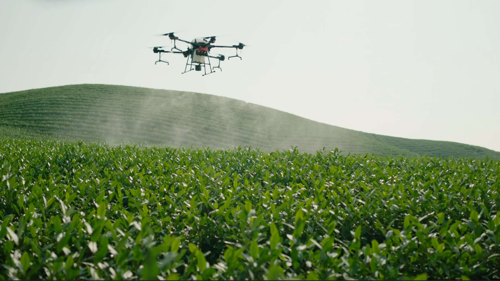

Pulverização rápida e otimizada, economizando tempo e dinheiro.
Solicite um orçamento sem compromisso e agende uma demonstração.
Solicite Orçamento

vantagens de usar um Drone
-
Precisão na aplicação:
Aplicação precisa de pesticidas e fertilizantes, reduzindo o desperdício. -
Acesso a áreas remotas:
Capacidade de alcançar terrenos difíceis ou grandes campos de forma eficiente. -
Economia de tempo e custo:
Cobertura mais rápida e econômica em comparação com métodos tradicionais. -
Menos compactação do solo:
Evita danos causados pela entrada de veículos pesados na plantação. -
Menor exposição a produtos químicos:
Reduz a dispersão no ar e a exposição dos trabalhadores agrícolas.
Endereço:Rua oitenta e um, N344
Horario de funcionamento: 08:00 as 18:00